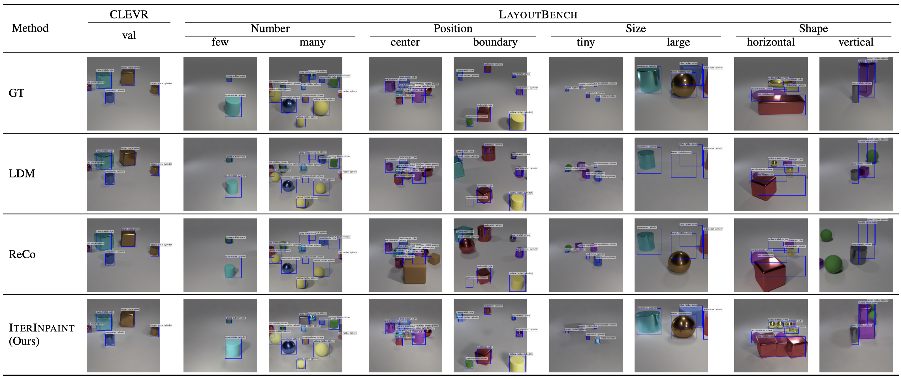

Evaluation Results
We evaluate two recent and strong layout-guided image generation models,
LDM and
ReCo, and our IterInpaint.
For quantitative evaluation, we measure the layout accuracy with average precision (AP) and image quality with FID/SceneFID.
We also conduct qualitative evaluations, and more detailed fine-grained skill analysis.
Quantitative Evaluation - Layout Accuracy
The first row shows the layout accuracy based on GT images.
Our object detector can achieve high accuracy on both CLEVR and LayoutBench datasets, showing the high reliability.
The second row (GT shuffled) shows a setting where a given target layout, we randomly sample an image from the GT
images to be the generated image.
The 0% AP on both CLEVR and LayoutBench means that it is impossible to obtain high AP by only generating high-fidlity
images but in the wrong layouts.
As shown in the bottom half of the table,
while all three models achieve high layout accuracy on CLEVR,
the layout accuracy drop by large marigns on LayoutBench, showing the ID-OOD layout gap.
Specifically, LDM and ReCo fail substantially on LayoutBench across all skill splits,
with an average drop of 57~70% per skill on AP50,
compared to the high AP on in-domain CLEVR validation split.
In contrast, IterInpaint generalize better to OOD layouts in LayoutBench, while maintining or even slightly improving layout accuracy on ID layouts in CLEVR.
Layout accuracy in AP/AP
50(%) on CLEVR and LayoutBench. Best (highest) values are in bold.
Quantitative Evaluation - Image Quality
On CLEVR, LDM/ReCo achieves better FID/SceneFID than IterInpint,
indicating that strong layout control performance of IterImpaint comes with a trade-off in these image quality metrics.
However, on LayoutBench, the three models achieve similar FID scores,
despite the significant layout errors of LDM and ReCo,
which suggests that image quality measures alone are not sufficient for evaluating layout-guided image generation
and further justify using layout accuracy to examine layout control closely.
Image Quality in FID/SceneFID on CLEVR and LayoutBench. Best (lowest) values are in bold.
Qualitative Evaluation
On CLEVR, all three models can follow the ID layout inputs to place the correct objects precisely.
On LayoutBench, LDM and ReCo often
make mistakes, such as
generating objects that are much smaller (e.g., Number-few) / bigger (e.g., Size-tiny, Position-center) than the given bounding boxes,
and missing some objects (e.g., Number-many, Position-center, Position-boundary, Size-large).
However, IterInpaint can generate objects that are more accurately aligned to the given bounding boxes in general, which
are consistent with the higher layout accuracy.
Especially for the extreme small bounding boxes in Size-tiny, only IterInpaint, among the three models, generates objects
that fit.

Comparison of generated images on CLEVR (ID) and LayoutBench (OOD). GT boxes are shown in
blue.
Fine-grained Skill Analysis
We perform a more detailed analysis on each LayoutBench skill to understand better the challenges presented in
LayoutBench and to examine the weakness of each method.
Specifically, we divide the 4 skills into more fine-grained splits to cover both ID (CLEVR) and OOD (LayoutBench) configurations.
We sample 200 images for each split and report layout accuracy.
Comparing across 4 skills,
the majority of Size skill splits (except for size=2) are the least challenging, while the Position/Number skill is the
most challenging. IterInpaint significantly outperforms LDM and ReCo on all splits.
Among the other two, LDM has slightly higher scores than ReCo in general.
Detailed layout accuracy analysis with fine-grained splits of 4 LayoutBench skills.
In-distribution (same attributes to CLEVR) splits are colored in
gray,
For the Shape skill, the splits are named after their height/width ratio (e.g. H2W1
split consists of the objects with a 2:1 ratio of height:width).